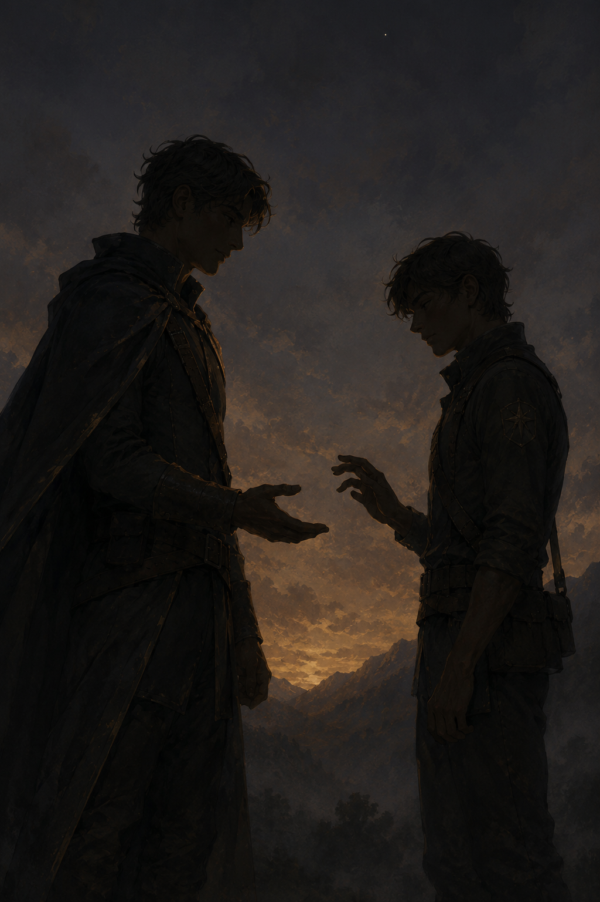

The Tiberian Empire
Pre-industrial imperial fantasy — scarce women, sworn oaths, and a winter that should not be coming

A centralized empire roughly two centuries old, forged by Emperor Tiber out of the chaos of the last High Winter — and never handed back. It is a Greco-Roman imperial society filtered through medieval feudalism: no gunpowder, very little magic, and a court that runs on bloodline, oath, and leverage. Roughly three boys are born for every girl, so women are scarce and fiercely valued, every match a negotiation. All men serve their conscription, a duke's son beside a farmer's, and the army is where most have their first taste of love and loss alike. The current dynasty seized the throne a decade ago, when the Silver Knight cut down the old tyrant. Now an aging emperor, a Gallemere queen, and a crown prince nearing service age circle one another — while in the frozen north, Dunhallow's shamans swear the cycle is turning centuries too early, and no one south of the snow will listen.
▶ Setting Notes
You can probably already see this was heavily influenced by a certain popular grimdark fantasy series which may or may not ever be completed. ;P But I put my own spin on it.
I'm really interested in gender roles and how people perform gender—it's such an interesting topic. This setting explores that a little bit in that there's a massive sex imbalance, with way more men than women. In a world like that, presumably society would adapt, for better or worse.
The Six Territories
Lorebook
Characters
Click a character to see download options.


{kind=link}